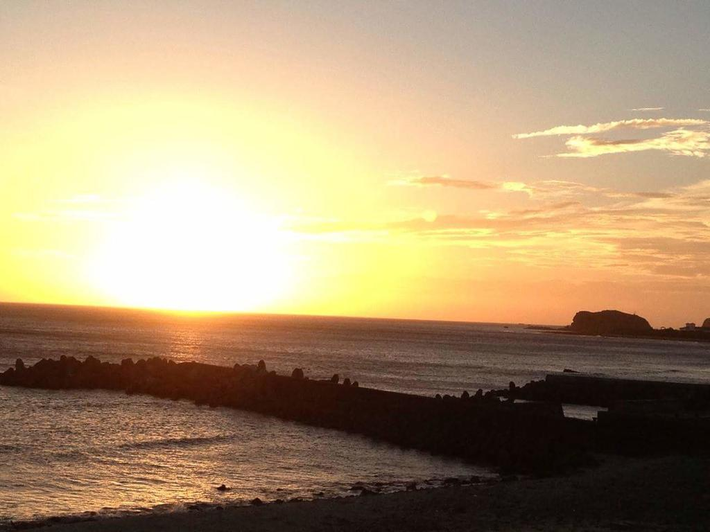
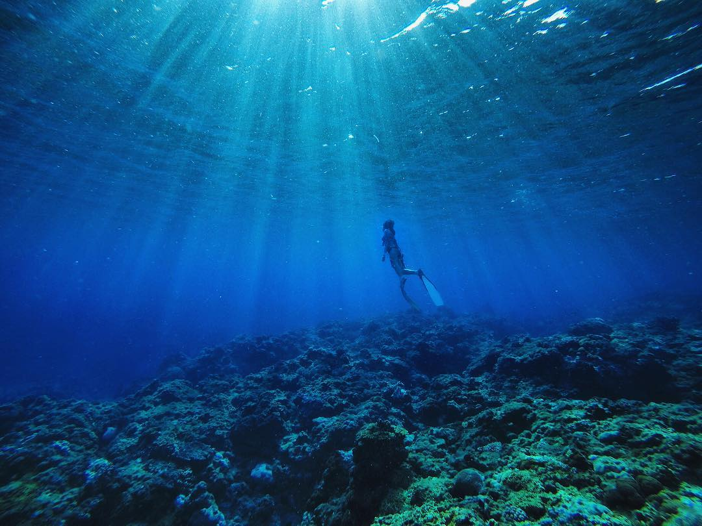
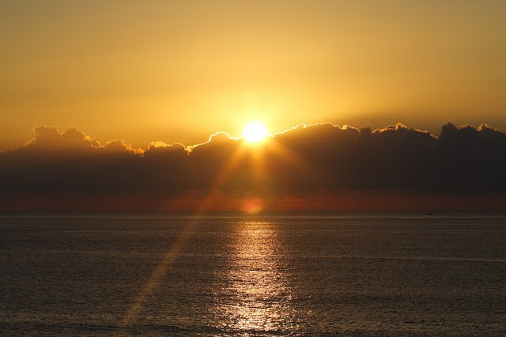
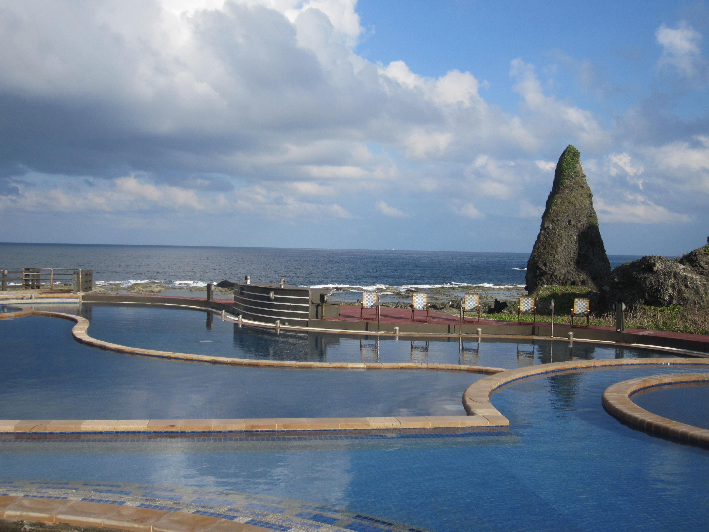

| Green Island Hotel | Green Island resting Place | Nanliao Village |
|---|---|---|
 |
 |
 |
| Meet at Taipei hotel lobby, transfer to TaipeiTSAAirport, take flight MDA391 (0810~09:05) to Taitung, Meet at Taitung airport, then take DAC (12:05~12:20) to Green Island.After arrival Green Island, transfer to hotel, then free and leisure. The island was known to these people as Sanasai. Formerly known as the "Fire-Burned Island". | As it is a famous island, you can go to the beach for a walk and just feel the breeze. Just taking a walk along the beach can feel the breeze and see the great view of beach. And if you just stay and sit on a rock and gaze and the beach can soothe your feelings and calm down your mind. | You can ride a scooter to go around the village and go sightseeing. If you are tired of sightseeing you can sita restaurant and have a taste of the special, fresh sea food, which is only present near the beach. When you are done of sightseeing, you can return to the hotel at night. |
| Sun rise | Snorkelling in Green Island | Sunset |
|---|---|---|
|  |  |  |
| After you get up, you can see the beautiful sunrise through your hotel. Watching sunrise from different places has differrent feelings. And you can have a nice breakfast at your own hotel. Then you can set off to go snorkelling. | As it is a fascinating tourist place with white beaches, magnificent coral reefs, rich flora and fauna and steep sea side cliffs, you can go snorkeling. Snorkelling at Green Island, with its lifeguard patrolled beach, is a safe and exciting way to introduce yourself to the Great Barrier Reef. | If you are enough of the snorkelling, you can change your clothes back and wait and see the great sunset view somewhere on the beach. And then you can come back to hotel and have a great dinner. You can rest now becaus eyou must have been tired from snorkelling all day. |
| Little great wall | Lighthouses | The Zhaori Saltwater Hot Springs |
|---|---|---|
 |
 |
 |
| Green Island has some intriguing volcanic-rock formations. The 300m-long promontory called Little Great Wall is the northern wall of the crater of the volcano that formed Green Island. You can go hiking and go to this little great wall. | When you are going hiking everywhere, you can also go to various lighthouses. Every island has their lighthouses to light the sea at the night view. They are one of the ditinct placces in Green Island. You can take a look of them and take photos as reminiscences. | The Zhaori Saltwater Hot Springs are fed by seawater and underground water heated by the volcanic lava of Green Island. This is one of only three saltwater hot springs in the world. As there are three open-air pools and a spa pool where you can listen to the sound of the surf, enjoy the sunrise, or watch the stars as they soak away the stress. |
| Price List | |
|---|---|
| Numbers of people | Usual Price |
| Single | $1120 |
| Dual | $2200 |
| Triple | $3300 |
| Four and above | $1100 for each |